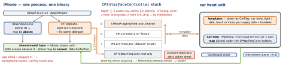

ios-platform · folio
In one line: A CarPlay app is not a separate target: it is a second scene
(CPTemplateApplicationScene) of your iOS app, same process. You never draw its UI —
you hand templates to a CPInterfaceController and the car renders
them. Apple grants one category entitlement; the category decides which templates
you may use and how deep the stack goes. Only navigation apps draw pixels
(the map, in a CPWindow).
Download PDF Print view LaTeX source


How it works
- Entitlement per category, requested from Apple; a Boolean key in
.entitlements, matching App ID + profile. A template outside your category → runtime exception. - Scene manifest:
UISceneConfigurationsgets aCPTemplateApplicationSceneSessionRoleApplicationentry (classCPTemplateApplicationScene+ your delegate). No extension, no new target. - Connect:
templateApplicationScene(_:didConnect:)hands you theCPInterfaceController: keep it,setRootTemplate. Nav apps get…didConnect:to:with aCPWindow. Disconnect → drop both. - Stack: push / pop /
pop(to:);presentTemplateshows one modal.CPTabBarTemplateis root only, each tab its own stack. - Templates are data: text,
CPImageSet(light/dark), handlers. Update in place (updateSections(_:)). - The car sets limits:
maximumItemCount,maximumTabCount,CPSessionConfiguration.limitedUserInterfaces(.keyboard,.listswhile driving); a grid shows 8 buttons.
Categories — key com.apple.developer.carplay-…
| category | key suffix | depth | own templates · rule |
|---|---|---|---|
| audio | audio | 5 | Now Playing |
| communication | communication | 5 | Contact |
| navigation | maps | 5 | Map, Search, Voice |
| EV charging, parking | charging, parking | 5 | Point of Interest, Information |
| quick food ordering | quick-ordering | 2 (3†) | Point of Interest, Information |
| fueling (iOS 16) | — | 3 | |
| driving task (iOS 16) | driving-task | 2 (3†) | |
| public safety | — | — | dispatch, routing |
| voice conv. (26.4) | voice-based-conversation(unverified) | 3 | audio session only while voice is in use |
| video (iOS 27) | — | — | parked only, AirPlay video |
[1pt] † iOS 26.4+. List, grid, tab, alert, action sheet: all. Information: not audio. EV + fueling combine, audio + video too. Old
MPPlayableContentManager: deprecated (14).
Example — audio app, scene delegate
func templateApplicationScene(_ s: CPTemplateApplicationScene,
didConnect ui: CPInterfaceController) {
self.ui = ui // keep it
let max = CPListTemplate.maximumItemCount // the car's limit
let rows = Library.shared.albums.prefix(max).map { a in
let row = CPListItem(text: a.title, detailText: a.artist)
row.handler = { _, done in
Player.shared.play(a) // shared model
ui.pushTemplate(CPNowPlayingTemplate.shared,
animated: true, completion: nil)
done() } // or it spins forever
return row }
let list = CPListTemplate(title: "Albums",
sections: [CPListSection(items: rows)])
ui.setRootTemplate(list, animated: true, completion: nil)
}Testing
Xcode Simulator I/O → External Displays → CarPlay (800×480 @2x): no locked iPhone, Siri or audio. CarPlay Simulator (Mac app, Additional Tools for Xcode) drives a real iPhone over a cable.
Traps
- Model built in the phone
SceneDelegate: CarPlay may launch you with no phone scene. - Locked phone:
.completefiles andWhenUnlockedkeychain items fail — usecompleteUntilFirstUserAuthentication/AfterFirstUnlock. - Hard-coded row counts: read the limits at runtime; they shrink while driving.
- “Custom CarPlay UI”: only the nav map. No video (bar parked video apps), games or free text.
Per category
- Audio: browse →
CPNowPlayingTemplate.shared, a singleton fed byMPNowPlayingInfoCenter; its buttons and the steering wheel go throughMPRemoteCommandCenter— the lock-screen plumbing. - Communication: SiriKit (
INSendMessageIntent,INSearchForMessagesIntent,INStartCallIntent) + CallKit;CPContactTemplate,CPMessageListItem. Siri dictates — no keyboard. - Navigation:
CPMapTemplate(buttons, trips, maneuvers viaCPNavigationSession) over your map;CPSearchTemplate; Dashboard (CPSupportsDashboardNavigationScene) + instrument-cluster scenes. - EV / parking / food:
CPPointOfInterestTemplate(map + picker),CPInformationTemplate(items + ≤ 3CPTextButtons).
New in iOS 26 · 26.4 · 27
- 26:
.systemSmallwidgets + Live Activities (.small) show on the Dashboard, no CarPlay app needed; opt out:.disfavoredLocations([.carPlay], for: [.systemSmall]). - 26.4: voice conversational apps; food/driving-task depth 3.
- 27: video apps — parked, in cars with video-in-car; AirPlay video; audio-only fallback (
supportsVideoPlayback).CPVoiceControlTemplatefor all. - CarPlay Ultra (every car display): automaker feature; templates restyle.